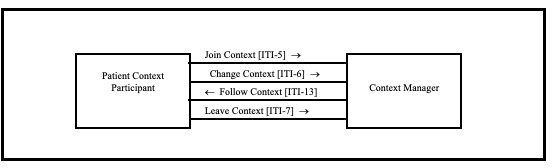
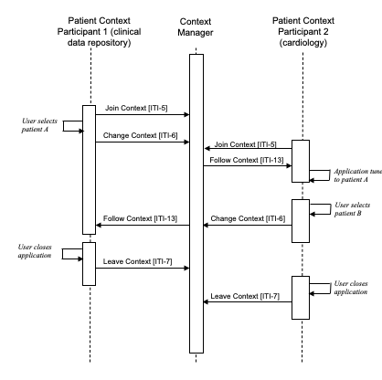

6 Patient Synchronized Applications (PSA)
The Patient Synchronized Applications Profile (PSA) enables single patient selection for the user working in multiple applications on a workstation desktop. With this Integration Profile patient selection in any of the applications causes all other applications to tune to that same patient. This allows a clinician to use the application they are most familiar with to select the patient and have that selection reflected in the other applications they are using follow along.
This profile leverages the HL7 CCOW standard, specifically for patient subject context management. The scope of this profile is for sharing of the CCOW Patient subject only. The IHE PSA Profile adds value to the CCOW specification for the patient subject by further constraining the patient identifier to ensure consistency across applications supporting PSA, providing guidance for consistent behavior across applications supporting PSA and ensuring consistent interaction with the Patient Identifier Cross-reference Consumer across the enterprise.
For applications that require user authentication, IHE recommends implementation of the Enterprise User Authentication Profile, as opposed to other means, such as a CCOW Authentication Repository. Section 4 describes the Enterprise User Authentication (EUA) Profile and the use of the CCOW user subject.
6.1 PSA Actors/Transactions
Figure 6.1-1 shows the actors directly involved in the Patient Synchronized Applications Integration Profile and the relevant transactions between them. Other actors that may be indirectly involved due to their participation in other profiles are not shown.
Figure 6.1-1: Patient Synchronized Applications Profile Actor Diagram
Table 6.1-1 lists the transactions for each actor directly involved in the PSA Profile. In order to claim support of this Integration Profile, an implementation must perform the required transactions (labeled “R”).
The Patient Context Participant shall support all four transactions identified in Figure 6.1-1 as defined in ITI TF-2a. The Patient Context Participant shall respond to all patient context changes. This actor shall set the patient context provided the application has patient selection capability.
The IHE Context Manager may encompass more than a CCOW context manager function. It may include a number of other components such as the context management registry and patient mapping agent.
The Context Manager may be grouped with a Patient Identifier Cross-referencing (PIX) Consumer of the Patient Identity Cross-referencing Profile; see ITI TF-2x: Appendix D for a description of the additional responsibilities placed on the Context Manager in this case.
Table 6.1-1: Patient Synchronized Applications Integration Profile - Actors and Transactions
| Actors | Transactions | Optionality | Section |
| Patient Context Participant | Join Context [ITI-5] | R | ITI TF-2a: 3.5 |
| Change Context [ITI-6] | R | ITI TF-2a: 3.6 | |
| Leave Context [ITI-7] | R | ITI TF-2a: 3.7 | |
| Follow Context [ITI-13] | R | ITI TF-2a: 3.13 | |
| Context Manager | Join Context [ITI-5] | R | ITI TF-2a: 3.5 |
| Change Context [ITI-6] | R | ITI TF-2a: 3.6 | |
| Leave Context [ITI-7] | R | ITI TF-2a: 3.7 | |
| Follow Context [ITI-13] | R | ITI TF-2a: 3.13 |
6.1.1 PSA Required Actor Groupings
An actor from this profile (Column 1) shall implement all of the required transactions and/or content modules in this profile in addition to all of the requirements for the grouped actor (Column 2).
Table 6.1.1-1: PSA - Required Actor Groupings
| PSA Actor | Actor(s) to be grouped with | Reference |
| Patient Context Participant | None | -- |
| Context Manager | None | -- |
6.2 PSA Actor Options
Options that may be selected for this Integration Profile are listed in Table 6.2-1 along with the actors to which they apply. Dependencies between options, when applicable, are specified in notes.
Table 6.2-1: Patient Synchronized Applications - Actors and Options
| Actor | Options | Vol. & Section |
| Patient Context Participant | No options defined | - - |
| Context Manager | No options defined | - - |
6.3 Patient Synchronized Applications Integration Profile Process Flows
The Patient Synchronized Applications Integration Profile provides maximum value when a user needs to use more than one application simultaneously. The process flow outlined in Section 6.3.1 depicts a use case where the applications only participate in the PSA Profile. The process flow outlined in ITI TF-1: Appendix E illustrates when the PSA and Enterprise User Authentication (EUA) Profiles are deployed together.
6.3.1 Use Case: Simple Patient Switching
When an actor in the PSA Profile is not grouped with an actor in the EUA Profile only the patient identity is passed in context. This use case does not explicitly identify the method of user authentication, as it may not be required by the application or may be accomplished by other means. In this use case both applications share the same patient identifier domain. The process flow for this use case is:
The clinician launches the clinical data repository application, depicted as Patient Context Participant Actor 1. The clinical data repository application joins the context session for the clinician desktop.
The clinician selects patient A in the clinical data repository application. The clinical data repository application sets the identifier for patient A in context.
The clinician launches a cardiology application, depicted as Patient Context Participant Actor 2. The Cardiology application joins the context session, gets the identifier for patient A from context, and tunes its display to patient A.
The clinician selects patient B in the cardiology application. This action results in the initiation of a Change Context transaction by the cardiology application (Patient Context Participant Actor 2). All non-instigating applications participate via the Follow Context transaction, which results in the selected patient being displayed in the clinical data repository application (Patient Context Participant Actor 1).
The clinician closes the clinical data repository application. The clinical data repository application leaves the context prior to terminating the application.
The clinician closes the cardiology application. The cardiology application leaves the context prior to terminating the application.
Figure 6.3-1 illustrates the process flow for this use case.
Figure 6.3-1: Simple Patient Switching Process Flow